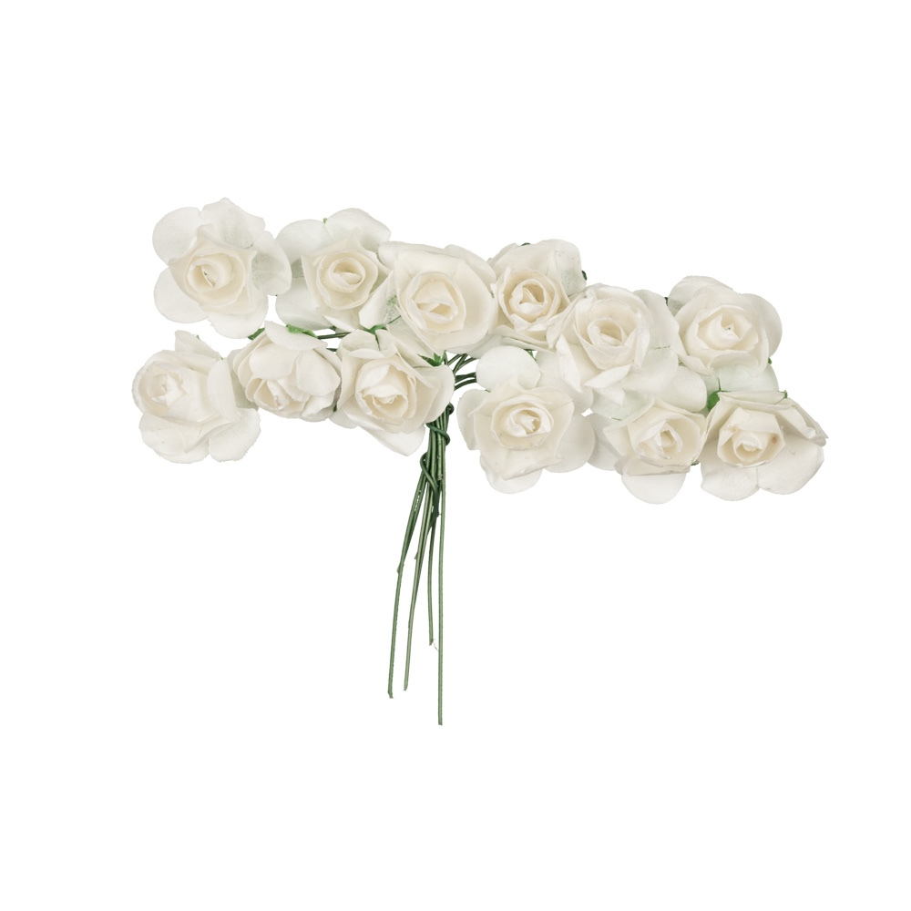
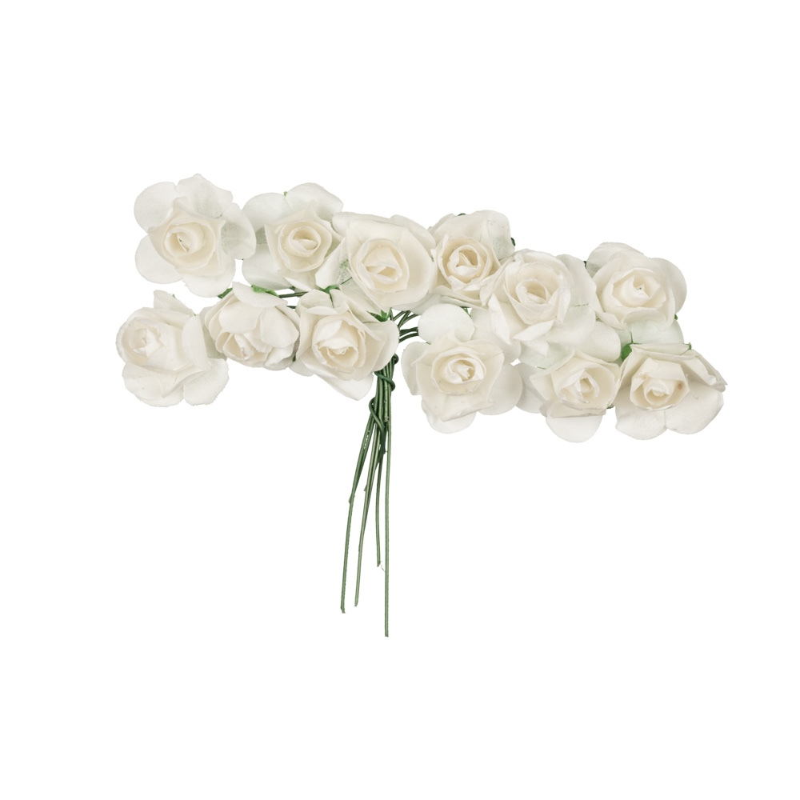

Мастер класс
Для тех девушек, кто в первую очередь ценят индивидуальность в образе можно предложить прекрасный вариант – дополнить прическу ободком из цветов, сделанным вручную. Такие ободки будут эксклюзивными и непременно станут изюминкой вашего образа.
Для того чтобы получить такое чудо рукоделия можно воспользоваться двумя способами:
Приобрести ободок ручной работы у мастера.
Сделать цветочный аксессуар собственноручно.
Оба способа хороши, выбирать только лишь вам. Первый способ имеет ряд положительных моментов. Заказав цветочный ободок ручной работы у профессионала, вы получите максимально красивое изделие и ограничите себя от возможных неудач, так как не все знают, как правильно сделать ободок своими руками.
Любая работа руками требует определенных навыков и кропотливости. Такой аксессуар обойдется вам дороже, так как ручная работа хорошего качества всегда оценивалась довольно высоко, а связываться с некачественной работой, вряд ли, кому-то захочется.
Материал
Когда я начинаю свою работу, то первым делом узнаю у клиента под что собирается носить данный аксессуар и какие цвета ему интересны. Тогда и мне проще работать и клиенты довольны.
Привожу пример цветов для моих работ, они бывают разных размеров и оттенков на любой вкус.
 
